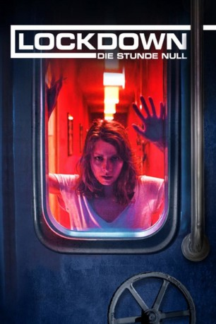

#9444 Lockdown: Die Stunde Null
Alternativ: Lockdown: Tödliches Erwachen
 
 IMDB-Wertung: 5.5 / 10
IMDB-Wertung: 5.5 / 10  Metascore: 0
Metascore: 0 
Die junge Virologin Liv erwacht neben ihrem Partner, Bioinformatiker Lex Staroske, der schwer verletzt ist, in einem abgeschlossenen Raum. Kurz darauf erfahren sie den vermeintlichen Grund für ihren unerwarteten Aufenthaltsort: Ihr Nachbar Kurt Veith öffnet die Zimmertür und erklärt, dass er sie und Lex gerade noch rechtzeitig vor einem von Terroristen auf die Stadt verübten Biowaffenanschlag retten und sie in seiner hermetisch abgeriegelten Wohnung vor dem draußen tobenden, tödlichen Virus in Sicherheit bringen konnte. Das Wissenschaftler-Paar ist sich nicht sicher, ob sie seiner Geschichte Glauben schenken kann: Wurden sie entführt oder tatsächlich vor einem Anschlag gerettet?
Jahr: 2017
Dauer: 80 Minuten
FSK: 12
Land: Deutschland Studio: Sony Pictures Home EntertainmentTonspuren:
Untertitel:
Auflösung: 1080p (1920x800) Größe: 1525 MB
Genre: Thriller
Regisseur: Bogdana Vera Lorenz
Drehbuch: Bogdana Vera Lorenz, Max Permantier
Soundtrack: Carolin Heiß, Marc-Sidney Müller
Darsteller:
 Alice Dwyer als Liv Beidendorf
Alice Dwyer als Liv Beidendorf- Jeff Wilbusch als Georg Horn
- Götz Schulte als Kurt Veith
- Maximilian Meyer-Bretschneider als Alexander Staroske
- Melanie Kogler als Ina Horn
- Laura Velleman als Leonie Horn
Datei: X:\2017(G-M)\Lockdown Die Stunde Null (2017, FSK12, 1920x800).mkv seit 03.09.2018
Festplatte: HD 2017(A-Z)-2018(A-F)
 Es gibt insgesamt 148 Filme in der Gruppe '2017(G-M)'
Es gibt insgesamt 148 Filme in der Gruppe '2017(G-M)'